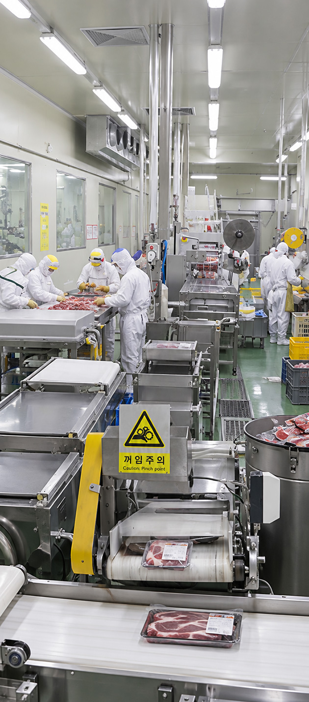

사업영역
사업영역
HOME > 사업영역 > 육가공사업
PROCESSED MEAT육가공사업
신선하고 깨끗한 것을 드리고 싶은 마음
좋은 원료와 정직한 기술로
믿을 수 있는 맛을 만듭니다
PROCESSED MEAT
청정 사료로 키운 돼지의
신선하고 부드러운 육질
- #완전자동화 도축시설
- #급속냉각터널
- #HACCP
- 육가공산업의 선두주자인 사조산업(주)천안공장은 1994년에 국내최초로 도축시설의 완전자동화 시스템을 도입하여 국내 육가공산업 수준을 한 단계 끌어 올렸습니다.
- 또한 최신식 급속냉각터널을 가동하여 고품질의 돈지육을 생산하고 있으며, HACCP 운용평가 상위등급 도축장으로 선정 되었습니다. 위생적으로 가공한 고급 냉장 돈육인 "사조로하이포크"를 국내시장에 공급하고 있으며, 위생 가공설비를 더욱 강화하여 향후 자체 브랜드육의 시장 확대를 꾀하고 있습니다.
CORE STRENGTH 천안공장의 육가공 경쟁력
자동화·위생·냉각 인프라를 기반으로 고품질 돈지육을 생산하고 냉장 브랜드육의 시장 확대를 추진합니다.
-
01. AUTOMATION
- 완전자동화 시스템
- 국내최초로 도축시설의 완전자동화 시스템을 도입해 육가공산업 수준을 한 단계 끌어올렸습니다.
-
02. FRESHNESS
- 급속냉각 품질관리
- 최신식 급속냉각터널을 가동하여 고품질의 돈지육과 최상의 지육품질을 유지합니다.
-
03. HYGIENE
- HACCP 상위등급
- HACCP 운용평가 상위등급 도축장으로 선정되었으며 지속적인 위생 투자를 이어가고 있습니다.
MANUFACTURING SITE 공장소개

CHEONAN PROCESSING PLANT 천안가공장
국내 육가공산업의 수준을 높인 생산거점사조산업(주)천안공장은 94년에 국내최초로 도축시설의 완전자동화 시스템을 도입하였으며, 2008년, 2009년 2년 연속 HACCP 상위등급 도축장으로 선정 되어, 위생적으로 가공한 고급 냉장 돈육인 "사조 로하이 포크"를 국내 시장에 공급하고 있습니다. 지속적인 위생 투자로 육가공산업 수준을 한 단계 끌어올려 향후 자체 냉장브랜드육의 시장 확대를 꾀하고 있습니다.
- 주소
- 충남 천안시 서북구 직산읍 성진로 378
- 부지 및 연면적 (단위 : m²)
-
구분 부지 연면적 용도별구분 공장 사무실 후생시설 고성공장 24,156 7,155 5,855 590 710
- 생산품목
- 돈지육
- 특징
- 최신 급속냉각터널 가동으로 최고의 지육품질 유지
PRODUCTION PROCESS 생산공정
생돈 입고부터 지육 보관·반출까지, 원문에 기재된
생산공정을 순서대로 구성했습니다.
-
forklift
- STEP 01
- 생돈입고
-
alarm
- STEP 02
- 계류
-
bolt
- STEP 03
- 전살
-
humidity_mid
- STEP 04
- 방혈
-
shower
- STEP 05
- 1차세척
-
skillet
- STEP 06
- 탕박
-
emergency_heat_2
- STEP 07
- 탈모
-
cool_to_dry
- STEP 08
- 건조
-
mode_heat
- STEP 09
- 잔모소각
-
shower
- STEP 10
- 2차세척
-
content_cut
- STEP 11
- 두절단
-
filter_arrow_right
- STEP 12
- 내장적출
-
split_scene_2
- STEP 13
- 2분체분할
-
shower
- STEP 14
- 최종세척
-
scale
- STEP 15
- 계량 및 등급판정
-
ac_unit
- STEP 16
- 급속냉각
-
package_2
- STEP 17
- 지육보관
-
local_shipping
- STEP 18
- 반출